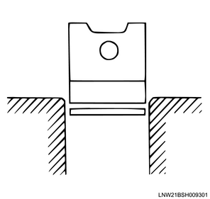
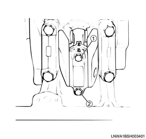
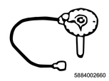

Note
Caution
1. Inspect the piston.
Note
1. Measure the cylinder block using a cylinder gauge.
Note
Measurement position： 20 mm { 0.79 in } From the top surface of the cylinder block
Note
Standard： 95.421 to 95.450 mm { 3.7567 to 3.7579 in }
Limit： 95.48 mm { 3.7590 in }
Caution
2. Measure the piston using the micrometer.
Note
Measurement position： 11.00 mm { 0.43 in } From the bottom of the piston
3. Calculate the clearance from measured value.
Note
Standard： 0.052 to 0.090 mm { 0.0020 to 0.0035 in }
Caution
4. Select the piston.
Note
| Grade | Outer diameter |
| A | ： 95.340 to 95.369 mm { 3.7535 to 3.7547 in } |
| B | ： 95.350 to 95.379 mm { 3.7539 to 3.7551 in } |
| C | ： 95.360 to 95.389 mm { 3.7543 to 3.7555 in } |
1. Install the piston ring to the cylinder block.
Note

Note
2. Measure the clearance using a feeler gauge.
Note
Standard： 0.32 to 0.46 mm { 0.0126 to 0.0181 in } 1st piston ring
Standard： 0.42 to 0.66 mm { 0.0165 to 0.0260 in } 2nd piston ring
Standard： 0.27 to 0.56 mm { 0.0106 to 0.0220 in } Oil ring
3. Measure the clearance using a feeler gauge.
Note
Standard： 0.06 to 0.12 mm { 0.0024 to 0.0047 in } 2nd piston ring
Limit： 0.15 mm { 0.0059 in } 2nd piston ring
Standard： 0.03 to 0.07 mm { 0.0012 to 0.0028 in } Oil ring
Limit： 0.15 mm { 0.0059 in } Oil ring
Note
1. Inspect the piston pin.
Note
1. Measure outer diameter using the micrometer.
Note
Standard： 33.995 to 34.000 mm { 1.3384 to 1.3386 in }
1. Measure inner diameter using a dial gauge.
Note
2. Calculate the clearance from measured value.
Note
Standard： 0.008 to 0.020 mm { 0.0003 to 0.0008 in }
Limit： 0.05 mm { 0.0020 in }
3. Apply the engine oil to the piston pin.
4. Install the piston pin to the piston.
5. Turn the piston pin.
Note
Standard： 0.008 to 0.019 mm { 0.0003 to 0.0007 in }
6. Measure the connecting rod assembly using the connecting rod aligner.
Note
Standard： 0.05 mm { 0.002 in } Twisting
Standard： 0.05 mm { 0.002 in } Degree of parallelization
1. Remove the connecting rod bearing cap from the connecting rod.
Note
2. Inspect the connecting rod bearing.
Note
3. Put the PLASTIGAUGE on the crankshaft.
Note
4. Install the connecting rod bearing cap to the connecting rod.
5. Apply the engine oil to the bolt.
6. Tighten the bolt using a torque wrench.
Note

Tightening torque： 29.4 N・m { 3.0 kgf・m / 22 lb・ft }
Note

SST: 5-8840-0266-0 - angle gauge
Specified angle： 45 to 60 °
7. Remove the connecting rod bearing cap from the connecting rod.
8. Measure the clearance using the PLASTIGAUGE.
Note
Standard： 0.033 to 0.075 mm { 0.0013 to 0.0030 in }